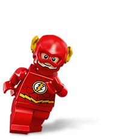

<!-- 'the-flash' custom element demo -->

<script>
  var TheFlashProto = Object.create(HTMLElement.prototype);

  // add some content
  TheFlashProto.createdCallback = function() {
    var template =
       '<div>' +
         '' +
         '<h3>I am Flash and my super power is speed :)</h3>' +
       '</div>';
    this.innerHTML = template;

  };

  document.registerElement('the-flash', {
    prototype: TheFlashProto
  });
</script>

<the-flash></the-flash>